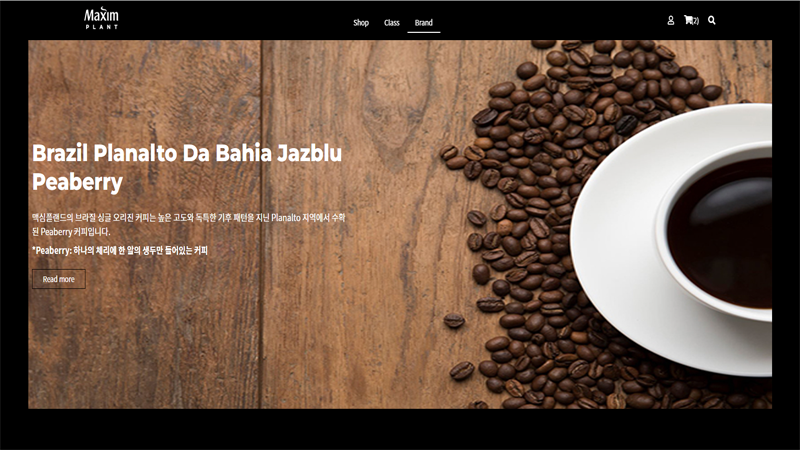
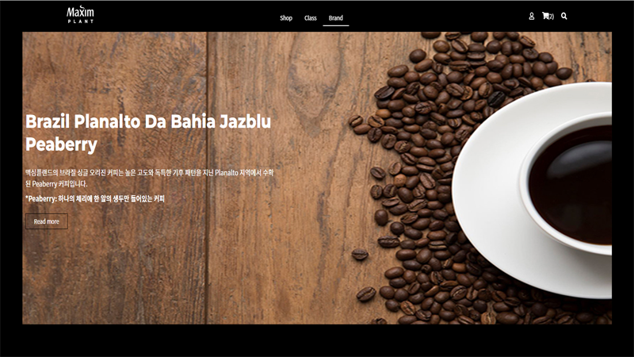
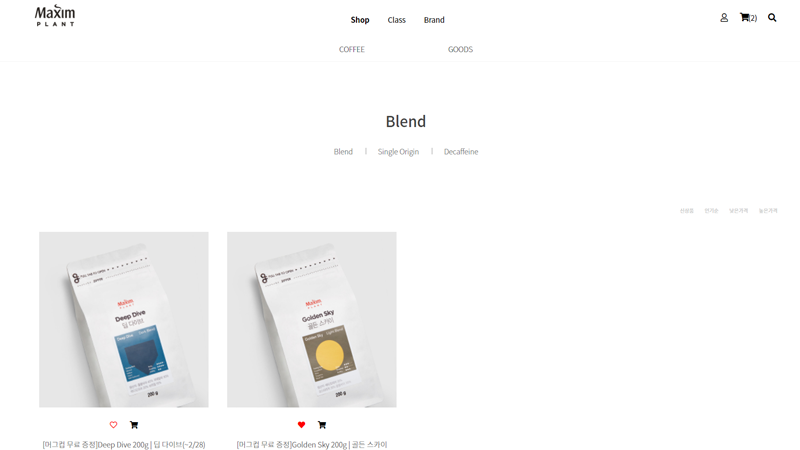

Slick Slide 라이브러리를 사용하여 메인화면을 구현했습니다.


project
project
01
Maxim-Coffee
커피와 굿즈를 파는 커피 사이트입니다. 많은 양의 상품(커피, 굿즈) 데이터를 JSON과 Fetch를 통해 상품을 보여주고 dataset를 사용하여 상품을 카테고리별로 정리했습니다. 로컬스토리지를 이용해 장바구니, 위시리스트도 구현해줬습니다. 유효성 검사를 통해 로그인과 회원가입 폼을 구현했으며 SCSS를 사용하여 방대한 양의 CSS를 좀 더 빠르고 쉽게 작성했습니다..
 


ProJect-01
Maxim-Coffee Site
제작기간
2022.02.22 ~ 2022.03.15
제작 영역
메인 페이지 1 / 서브페이지 4
기여도
HTML
CSS
JavaScript
메인화면은 Slick Slide 라이브러리를 이용해 구현했습니다.
많은 양의 상품(커피) 데이터를 JSON파일과 Fetch통해 화면에 나타냈습니다.
SCSS 활용, mixin 등의 문법 등을 활용하여 css에 대한 스킬를 향상시켰습니다.
-
-
 -
-
-
-

dataset를 이용해 상품(커피)들을 카테고리별로 정리했습니다.
LocalStorage를 사용해 장바구니 기능을 추가해줬습니다.
유효성 검사를 통해 로그인과 회원가입 폼을 구현했습니다.
로컬스토리지를 이용하여 위시리스트, 장바구니를 분류시켜줬으며 상품을 추가하면 재계산이 될 수 있도록 코드를 작성했습니다.
JSON과 Fetch를 사용하여 많은 양의 상품 데이터를 화면에 나타내줬습니다.